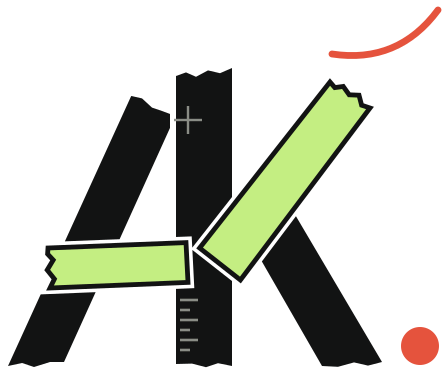

I ask useful questions.
Who is reading this? What do they need? What does the team need to deliver? Those questions shape the work.
A little about me

Available for contract workAhsan Khan
Writer & editor who builds the page, too.
Ahsan Khan / Writer & editor
A rough brief. A subject that's hard to explain. A page with plenty of information and no clear direction. That's the kind of work I enjoy getting into.
I write and edit content, and I care about what happens around it: the research, the feedback, the design and the final page.
My interest in design and frontend development helps me follow the work beyond a document. It gives me another way to notice what's missing and help finish it.
How the work moves
Every case study follows the same path. Pick a stage to see it in real work.
Who is reading, what they need to understand and what they should do next.
See it in SheBelieves →Hierarchy, colour and type that make the message easier to follow.
See it in Linden & Hale →A responsive, accessible build, checked in the browser before handover.
See it in Dr. Mara →Good work is a conversation
Room for questions, honest feedback and the occasional better idea. Click through a little version of the process.
Who is reading this? What do they need? What does the team need to deliver? Those questions shape the work.
When I change the structure or recommend an approach, I make the reason clear so we can decide together.
I want the final work to fit the page, the brief and the people who will use it.
We have the idea.
It’s still a little messy.
Good place to start. Who are we writing for, and what should they take away?
Start with the company history.
Start with the reader’s question.
A clearer way in.This gives the reader a reason to keep going. The background can follow.
A rough brief is welcome.
A human at the wheel
I use AI where it helps with the work, then review the output, check the sources and make the editorial decisions. The responsibility for those decisions stays human.
Here’s a small example of the questions I bring to a draft.
See the workOur innovative solutions guarantee incredible results for your business.
Tell us your goal.
We’ll agree on what the work needs to deliver.
The claimCan we support that promise?
The wordingDoes it tell the reader anything?
The next stepWhat should the reader do?
A fluent sentence still needs judgment.